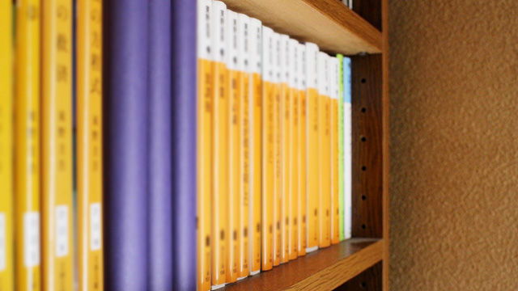

仕事柄、理系に関連する書物を読んだりすることが多いのですが、完全に息抜きというか楽しみで読むのは小説です。中学生になる前までは、よくもまあこんなに本を読まないなと思うぐらい、活字になった読み物を避けてきました。マンガは大好きで、キン肉マン、北斗の拳、キャプテン翼など週刊少年ジャンプ黄金期を代表するタイトルは穴の開くほど読み込んでいましたが…。
そんな私ですから、母親が普通に読書をさせたがるわけで、いつも「これすごくいいわよ、読んでみたら！？」などと薦めてくるのです。
しかし、そのやんわり強制しようとするその攻め方に反発心を抱き、余計に読書に対して敬遠するといった具合でした。もちろん、そういった親への反発だけでなく、読書そのものに対する苦手意識もありました。
なにが苦手って、文庫本一冊が長くて長くて（苦笑）。
半分ぐらいまで読んでしおりをはさんでおくんですね。それからなんやかんやで一週間ほど放置したらもう大変。それまでのストーリーを忘れてしまっているのです。
そうなるともう再び読む気は起きません。だから一冊読み通すというのは私にとって至難の業だったのです。
ある短編小説との出会い
そんな私が趣味で読書をするきっかけになったのは‘短編小説’との出会いでした。
出会いの第一期は小学校６年生の頃だったと思います。食卓の上に無造作に置いてあったのは、星新一さんの小説。
おそらく母が読んでいたのでしょう。しおりがはさまれたその本は何となく面白そうな、それでいて少し怖い（詳しくは忘れましたが、たしか表題には「悪魔」という言葉が使われていたと…）雰囲気を持っており、私は手に取らずにはいられませんでした。
たった半日で一冊の本を読み切る。
こんなことが自分に起きるとはまるで予想していませんでした。
後に知った言葉ですが、この小説のジャンルは「ショートショート」といい、短編の中でもさらに短いもの。
長編小説の長さが苦手な私には、これは読みやすかった。加えて、ちょっぴり怖い後味を残す終わり方、意外な結末も自分のツボにぴったりハマったのです。
翌日には、初めて自分のこづかいで本をまとめ買い（もちろん星新一さん）し、一転、読書少年に変身したのです。
このとき‘星新一’が食卓においてあったのは偶然か、はたまた巧妙な罠だったのか…。
今となっては、真相は闇の中です。
母親はもういないのかって？いえいえ、めっちゃくちゃ元気です、私よりも（笑）。このときのことを聞いてみたことがあるのですが、そのときの返事は、
「え？そんなことあったっけ、忘れた！」
という…（笑）。
彼女の性格を考えると、意図的でない可能性が高いのですが、それが偶然にもというか皮肉にもというか、これまで本を押し付けていたときには決して解決できなかったことを苦も無く解決したわけです。
さて、特定の作家に限定しているとはいえ、読書の楽しみを覚えた私。中学生になってよくよく同級生と話をしてみると、同じように星新一ファンがいて、意気投合したりもしました。
しばらくして転機がおとずれます。中１の国語の教科書に「走れメロス」が掲載されていまして、このお話のメッセージ性については私のアンテナが反応しなかったものの、最後に載っていた作者紹介…このときの悲壮感漂う太宰治の顔、その横に記された代表作「人間失格」の文字に私の中にある何かが反応したようでした。
迷うことなく書店に向かい、「人間失格」を購入。なぜか彼の退廃的な作風に水が合い、どっぷり浸かります（中１で太宰のなにが分かるわけでもありませんが、好きでした）。
その後、三島由紀夫にも手を出し（しかもしょっぱなが仮面の告白）、文学青年よろしく青春時代を過ごします。
この頃には長編への苦手意識はなくなっていました。
ただ、これら純文学作品を味わうには私は若すぎました。
また、思春期特有の様々な問題もあり日々忙しかった（学校の先生との対立、友人・異性のこと、遊び、あと勉強）ものですから、次第に読書熱は鎮火していきます。
第二の出会い”阿刀田高”
そんな日々に忙殺され読書の楽しみを忘れかけていた頃、出会い第二期にが訪れます。
高１の初秋でした。部活（水球をやっていました）でクタクタになって帰宅し、ソファでうたた寝をしていたんですね。
ふと目が覚めると２３時。ちゃんと寝なきゃと重い腰を上げたときにＴＶでやっていたのが、その出会いとなるドラマでした。
女優の檀ふみさん（ちなみに檀れいさん、壇蜜さんは全く関係ありません）が出演していたのですが、何やら冷蔵庫を開けて中をジ～っと見ているんですね。
たまに外に出かけるんですが、決まってどこかのお葬式に出るんです。で、例えば野球少年が交通事故でなくなったとかいう場合には悲しそうに棺の中にグローブを入れて帰るわけです。何かのつながりで知り合いという設定なのか。しかし参列者が「今の人だれ？知ってる人？」などとささやき合っているので、どうやら違う模様。
シーンが変わり、彼女が帰宅するのですが、またも薄暗い部屋の中で冷蔵庫の中身を凝視…。
たまに風呂場で意味もなく水が流れているシーンがあったりもして、いよいよもって意味が分かりません。
しかし状況が不透明であるにもかかわらず、怪しく怖い雰囲気はビンビン伝わってくるのです。これは何かあるぞという嗅覚がはたらき、私は寝るのを先送りしてドラマを見届けることを決意します。
テレビ欄をチェックすると、タイトルは「趣味を持つ女」と…どうやら葬式に参列するのが主人公の‘趣味’のようです。たしかに、わざわざ新聞の地域欄をチェックして、葬儀があるとなれば出かけていきます。
そして何とこのドラマの枠は２３時からの３０分間。
え？まったく意味がわからないまま、もう２３時２０分なんですけど…。
どんな結末なのか見守っていると、少し事態が変わります。この地域の葬儀で、このところよく‘香典泥棒’が出るというのです。そこで容疑者となるのが主人公の女性です。故人の知り合いなのかどうか不明だが、とにかくよく出没するとのウワサ。
そりゃあ、美人ですから目立ちもしますよね。
一瞬、「なんだ、それだけのドラマ？」という思いも脳裏をよぎりましたが、すぐに「いやいや、そんなはずはないでしょう」と見届けていると…。
香典泥棒の常習犯の男がつかまり、主人公の女性に対する嫌疑は晴れました。しかし刑事は主人公の女性にまだ何かこだわりというか、黒い予感のようなものを感じているようで、すっきりとしない表情をしています。
そんな折に刑事部屋に一本の電話が。これが葬儀屋からの電話で、こんなことを言うのです。
「自分の思い過ごしかもしれんが…最近、仏さんの骨が少し多い気がして」
ふと、時計を見ると２３時２７分ほど。このとき、私の中ですべてがつながりました。
なぜ冷蔵庫の中をじっと見ていたのか─アレがしまってあったのか…
なぜ若者の葬儀にばかり行っていたのか─ぬいぐるみやグローブね…
なぜときどき風呂場で水の流れるシーンがあったのか─あ、たしかにね…
よくよく思いかえしてみると、近所の人たちの噂話も伏線になっていました。
「最近、あの人の恋人らしき人、見ないわね～」みたいな会話。
最後の最後にすべてを悟らせる手法。これはヤバイ！ 私はエンディングのテロップに集中しました。
原作「阿刀田高」冷蔵庫より愛を込めて
翌日、当然のように書店に駆け付けた私。阿刀田高のコーナーでいろいろ物色していると、彼も短編の名手だということが判明しました。
残念ながら、「趣味を持つ女」が収録されている「冷蔵庫より愛を込めて（表題）」は置いてなかったのですが、直木賞受賞作の「ナポレオン狂」があったので購入しました。
ハマった！これはすごい作家に出会えたぞと、この日から阿刀田ファンになったのでした。
ちなみに、「冷蔵庫より愛を込めて」は、もうインターネットで中古を見つけるしかありません。私は数年後、念願かないネットで手に入れました。
原作の「趣味を持つ女」、今は手元にないので、私の記憶で書かせてもらいますが（というより、これまでの話も全部私の高校生の頃の記憶で書いているんですがね）、たしかこんなしめくくりだったと思います。
「天国でも、あなたの素晴らしいトライを決めてね」
刑事がそこに到着したとき、いびつに膨らんだラグビーボールを、彼女がちょうど棺に入れたときだった。
わかります？どういうことか。ここでネタバレさせるのはあまりに無粋なので、知りたい方はメールでご質問下さい！